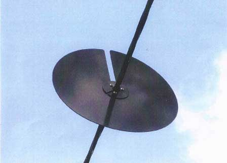
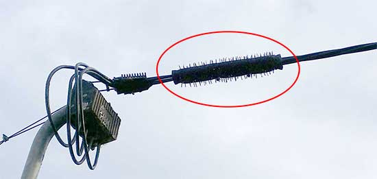
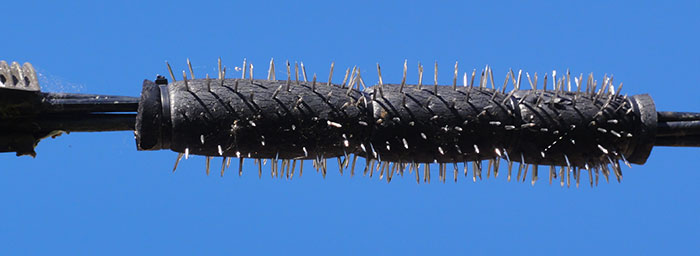
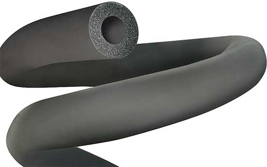
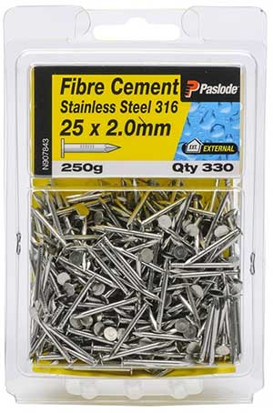
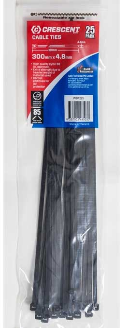
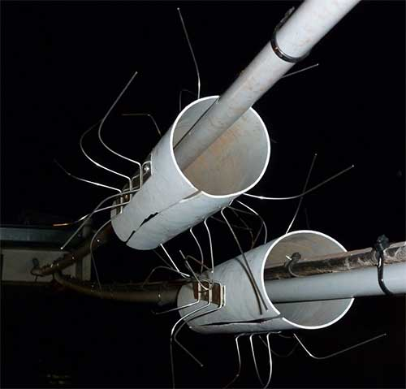

Possums on your roof?
Possums on your roof, getting there via the power cable? Do you drink your rainwater? If you call the power company and complain about the possums chewing out your solar panel cables and shitting in your drinking water, they tell you to take a hike. Amount of sympathy = zero. Don't bother. The darned possums chew the cables on my solar panels and urinate/defecate onto the roof, which feeds into my water tank. I had to do something!
There are expensive things you can buy, like a possum disk
These disks are often not allowed by power companies because they exert forces on the power cable when flexing in the wind. Or you can buy an ultrasonic possum repeller, but they don't work (I tried one — useless).
So here's an easy way I devised to keep possums off your roof if they're getting onto it via a cable like your power line.
 It's a possum deterrent that
- does not cost much (~$25 in parts)
- does not exert force or damaging friction on the power cable (or any cable)
- is durable
- just works!
All you need is some 9x32mm pipe insulation foam:
a packet of stainless steel nails (they won't rust)
and 4 longish cable ties .
- Cut off about a 370mm piece of insulation to use
- Cut it lengthwise with scissors to allow it to go over the cable
- Now push the nails through from the inside of the foam outwards, trying to get as many in as you can. I used about 70% of that packet. Leave a little unused patch of foam at the beginning and end for your cable ties to tie it to the power line.
- Get your electrician to slip it over the cable and secure with a cable tie on each end, and two even spaced in the middle (to stop it bulging open and allowing the possum to insert a paw there).
So far, 1 year and we have not had a possum on the roof!
The only thing now resting on the cable is the very soft foam tube. It cannot harm or damage the cable; indeed, by stopping the constant possum traffic, it's protecting the cable.
Some people say it's dangerous to do this, so that's why you should get your electrician to attach this to the mains cable, just in case you fall off the high ladder, or the cable is in poor condition and has cracks in the insulation that could be a danger to you. The insulation on the cable is several mm thick, so unless it has perished in the sun, the electrician will be safe. Danger of shock: infinitesimal. The biggest danger is being high up on a ladder.
Power companies, for liability reasons, don't want every Joe Sixpack attaching gizmoes to their mains power cables, and that's understandable, given the things some people have done, for example:
... so they have blanket rules about nothing being attached to their cables. But you can see my device is harmless, or you should be able to see that if you have any technical or scientific training.
As always, YOU DO THIS AT YOUR OWN RISK!